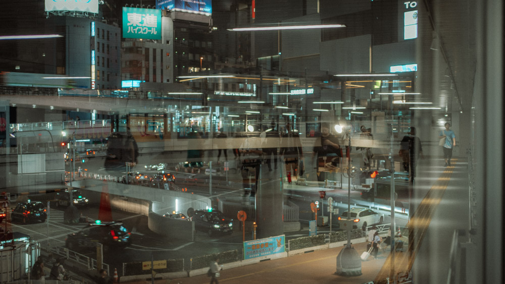

故事
从移动、等待和反复回望中生长出来的摄影练习。
这个网站被组织成一个拍摄地点与作品方向的档案，而不是单一的图片墙。地图帮助记住一张照片开始的地方，每个分组也可以慢慢长成项目、文字和完整作品集。
当前页面结构会随着真实影像继续扩展。新的首页背景、地点和照片都可以逐步加入，而不需要改变网站的整体骨架。

故事
这个网站被组织成一个拍摄地点与作品方向的档案，而不是单一的图片墙。地图帮助记住一张照片开始的地方，每个分组也可以慢慢长成项目、文字和完整作品集。
当前页面结构会随着真实影像继续扩展。新的首页背景、地点和照片都可以逐步加入，而不需要改变网站的整体骨架。
